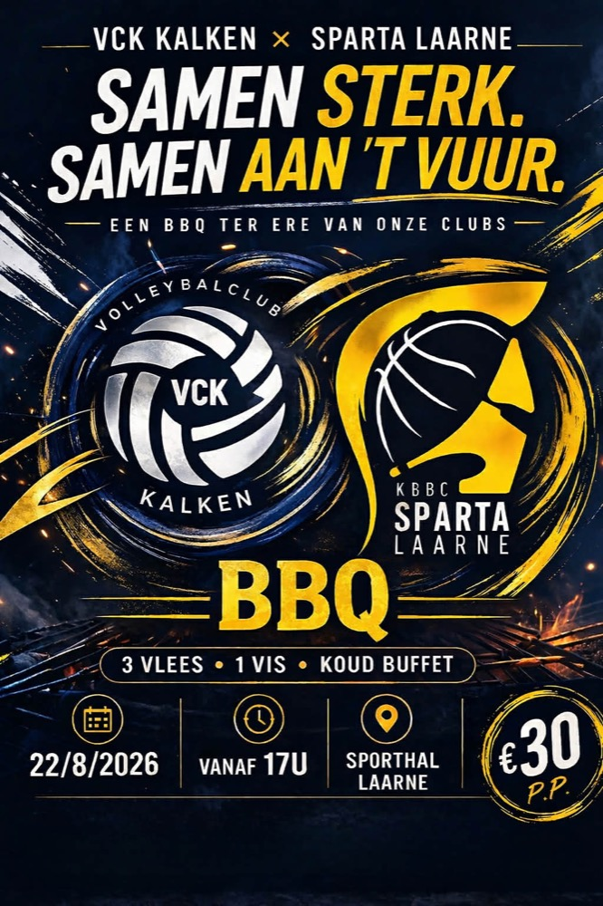
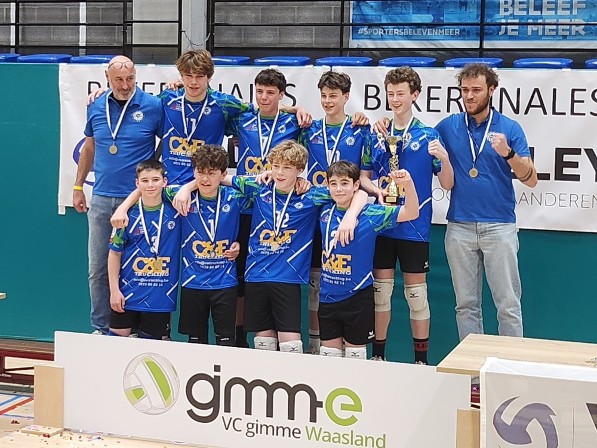
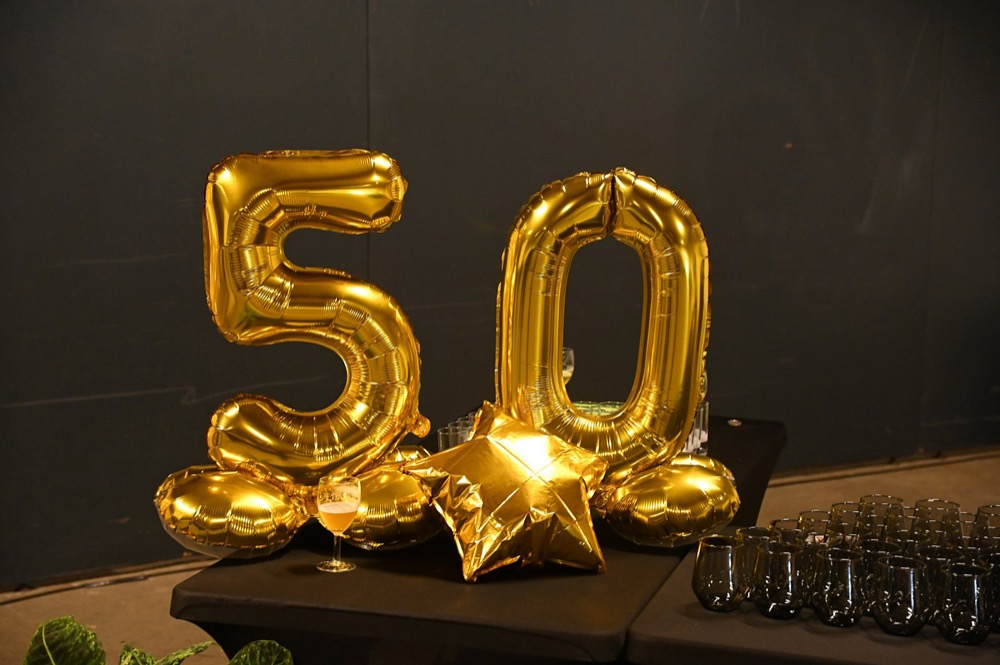
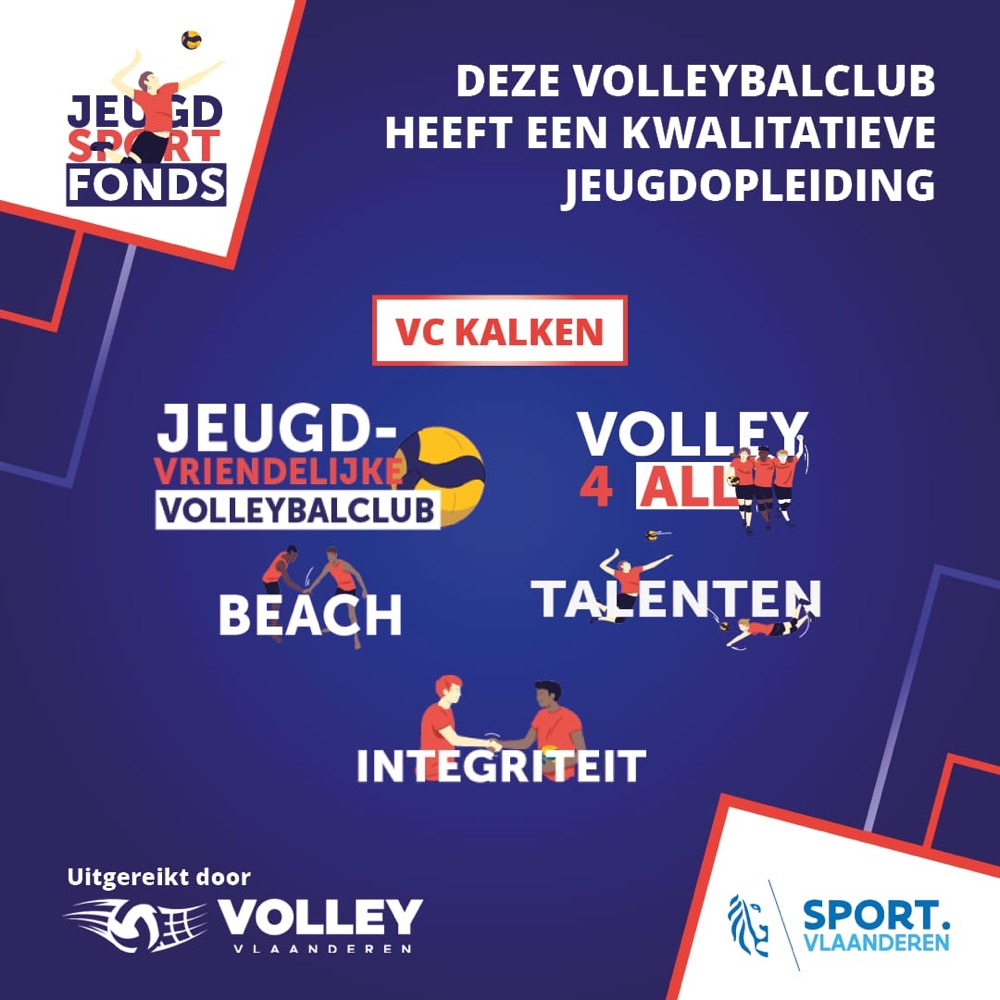
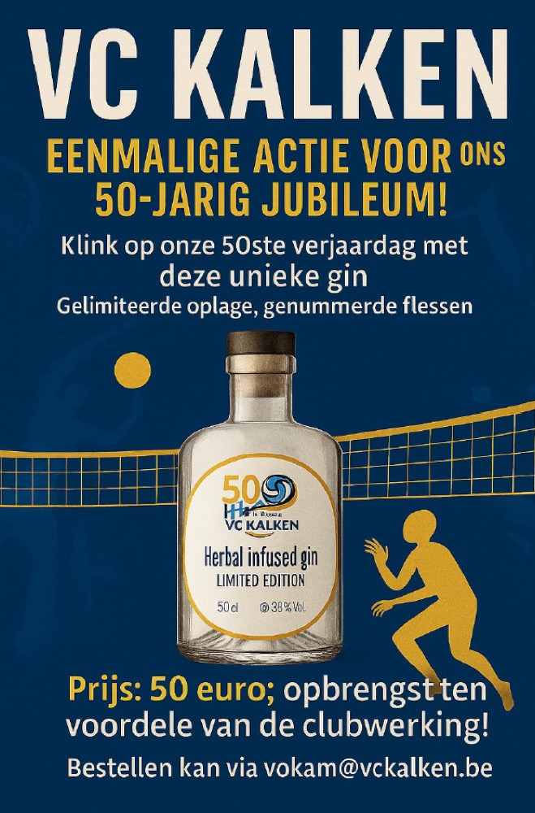

Evenement · 22/08/2026
BBQ met Sparta Laarne
VC Kalken en basketbalclub Sparta Laarne slaan de handen in elkaar: samen aan 't vuur op zaterdag 22 augustus vanaf 17u aan Sporthal Laarne. Iedereen welkom!
Lees meer →Duidelijke nieuwskaarten met datum, categorie en korte samenvatting — zodat je in één oogopslag weet wat er leeft in de club.

VC Kalken en basketbalclub Sparta Laarne slaan de handen in elkaar: samen aan 't vuur op zaterdag 22 augustus vanaf 17u aan Sporthal Laarne. Iedereen welkom!
Lees meer →
Onze jongens U15 kroonden zich tot winnaar van de Oost-Vlaamse beker. Een prachtige bekroning voor het team, de trainers en de hele jeugdwerking.
Lees meer →
Een halve eeuw volleybal in Kalken! We vierden ons gouden jubileum met een gala-avond en een onvergetelijk eindeseizoensfeest met de hele clubfamilie.
Lees meer →
Onze jeugdopleiding is officieel bekroond: VC Kalken ontving opnieuw meerdere Jeugdsportfonds-labels van Volley Vlaanderen.
Lees meer →
Klink mee op onze 50ste verjaardag met de unieke jubileumgin. Gelimiteerde oplage met genummerde flessen, volledig ten voordele van de clubwerking.
Lees meer →
Verzamel al onze spelers en ploegen in het eigen VCK-stickerboek. Wie zijn boek nog niet vol heeft, kon terecht op de ruilbeurs in de sporthal.
Lees meer →